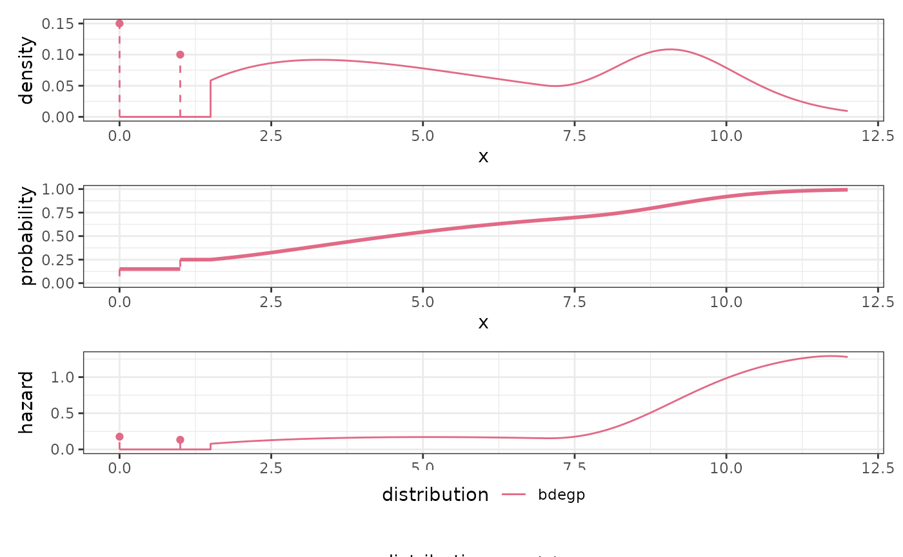

Distributions
Distributions are a set of classes available in
reservr to specify distribution families of random
variables. A Distribution inherits from the R6 Class
Distribution and provides all functionality necessary for
working with a specific family.
A Distribution can be defined by calling one of the constructor
functions, prefixed by dist_ in the package. All
constructors accept parameters of the family as arguments. If these
arguments are specified, the corresponding parameter is considered
fixed in the sense that it need not be specified when computing
something for the distribution and it will be assumed fixed when calling
fit() on the distribution instance.
Sample
For example, an unspecified normal distribution can be created by
calling dist_normal() without arguments. This means the
parameters mean and sd are considered
placeholders. If we want to, e.g., sample from
norm, we must specify these placeholders in the
with_params argument:
library(reservr)
set.seed(1L)
# Instantiate an unspecified normal distribution
norm <- dist_normal()
x <- norm$sample(n = 10L, with_params = list(mean = 3, sd = 1))
set.seed(1L)
norm2 <- dist_normal(sd = 1)
x2 <- norm2$sample(n = 10L, with_params = list(mean = 3))
# the same RVs are drawn because the distribution parameters and the seed were the same
stopifnot(identical(x, x2))Density
The density() function computes the density of the
distribution with respect to its natural measure. Use
is_discrete_at() to check if a point has discrete mass or
lebesgue density.
norm$density(x, with_params = list(mean = 3, sd = 1))
#> [1] 0.3278626 0.3922715 0.2813724 0.1117603 0.3778620 0.2849269 0.3542572
#> [8] 0.3037652 0.3380030 0.3807663
dnorm(x, mean = 3, sd = 1)
#> [1] 0.3278626 0.3922715 0.2813724 0.1117603 0.3778620 0.2849269 0.3542572
#> [8] 0.3037652 0.3380030 0.3807663
norm$density(x, log = TRUE, with_params = list(mean = 3, sd = 1)) # log-density
#> [1] -1.1151607 -0.9358010 -1.2680761 -2.1913990 -0.9732262 -1.2555227
#> [7] -1.0377321 -1.1915002 -1.0847006 -0.9655696
norm$is_discrete_at(x, with_params = list(mean = 3, sd = 1))
#> [1] FALSE FALSE FALSE FALSE FALSE FALSE FALSE FALSE FALSE FALSE
# A discrete distribution with mass only at point = x[1].
dd <- dist_dirac(point = x[1])
dd$density(x)
#> [1] 1 0 0 0 0 0 0 0 0 0
dd$is_discrete_at(x)
#> [1] TRUE FALSE FALSE FALSE FALSE FALSE FALSE FALSE FALSE FALSEdiff_density() computes the gradient of the density with
respect to each free parameter. Setting log = TRUE computes
the gradient of the log-density, i.e., the gradient of
log f(x, params) instead.
norm$diff_density(x, with_params = list(mean = 3, sd = 1))
#> $mean
#> [1] -0.20539076 0.07203805 -0.23512285 0.17828905 0.12450847 -0.23377349
#> [7] 0.17267525 0.22427736 0.19461580 -0.11628160
#>
#> $sd
#> [1] -0.19919475 -0.37904224 -0.08489705 0.17266080 -0.33683550 -0.09312311
#> [7] -0.27009027 -0.13817569 -0.22594681 -0.34525522Probability
With probability(), the c.d.f., survival function, and
their logarithms can be computed. For discrete distributions,
dist$probability(x, lower.tail = TRUE) returns \(P(X \le x)\) and
dist$probability(x, lower.tail = FALSE) returns \(P(X > x)\).
norm$probability(x, with_params = list(mean = 3, sd = 1))
#> [1] 0.2655087 0.5728534 0.2016819 0.9446753 0.6291140 0.2059746 0.6870228
#> [8] 0.7698414 0.7176185 0.3800352
pnorm(x, mean = 3, sd = 1)
#> [1] 0.2655087 0.5728534 0.2016819 0.9446753 0.6291140 0.2059746 0.6870228
#> [8] 0.7698414 0.7176185 0.3800352
dd$probability(x)
#> [1] 1 1 0 1 1 0 1 1 1 1
dd$probability(x, lower.tail = FALSE, log.p = TRUE)
#> [1] -Inf -Inf 0 -Inf -Inf 0 -Inf -Inf -Inf -InfGradients of the (log-)c.d.f. or survival function with respect to
parameters can be computed using diff_probability().
norm$diff_probability(x, with_params = list(mean = 3, sd = 1))
#> $mean
#> [1] -0.3278626 -0.3922715 -0.2813724 -0.1117603 -0.3778620 -0.2849269
#> [7] -0.3542572 -0.3037652 -0.3380030 -0.3807663
#>
#> $sd
#> [1] 0.20539076 -0.07203805 0.23512285 -0.17828905 -0.12450847 0.23377349
#> [7] -0.17267525 -0.22427736 -0.19461580 0.11628160Hazard
The hazard rate is defined by \(h(x, \theta) = f(x, \theta) / S(x, \theta)\), i.e., the ratio of the density to the survival function.
norm$hazard(x, with_params = list(mean = 3, sd = 1))
#> [1] 0.4463805 0.9183533 0.3524565 2.0200785 1.0188091 0.3588385 1.1318948
#> [8] 1.3198083 1.1969728 0.6141740
norm$hazard(x, log = TRUE, with_params = list(mean = 3, sd = 1))
#> [1] -0.80658365 -0.08517306 -1.04282794 0.70313635 0.01863443 -1.02488292
#> [7] 0.12389301 0.27748652 0.17979571 -0.48747702Fitting
The fit() generic is defined for Distributions and will
perform maximum likelihood estimation. It accepts a weighted, censored
and truncated sample of class trunc_obs, but can
automatically convert uncensored, untruncated observations without
weight into the proper trunc_obs object.
# Fit with mean, sd free
fit1 <- fit(norm, x)
# Fit with mean free
fit2 <- fit(norm2, x)
# Fit with sd free
fit3 <- fit(dist_normal(mean = 3), x)
# Fitted parameters
fit1$params
#> $mean
#> [1] 3.132203
#>
#> $sd
#> [1] 0.7405289
fit2$params
#> $mean
#> [1] 3.132203
fit3$params
#> $sd
#> [1] 0.752237
# log-Likelihoods can be computed on
AIC(fit1$logLik)
#> [1] 26.37096
AIC(fit2$logLik)
#> [1] 25.8626
AIC(fit3$logLik)
#> [1] 24.68469
# Convergence checks
fit1$opt$message
#> [1] "NLOPT_SUCCESS: Generic success return value."
fit2$opt$message
#> [1] "NLOPT_SUCCESS: Generic success return value."
fit3$opt$message
#> [1] "NLOPT_SUCCESS: Generic success return value."Fitting censored data
You can also fit interval-censored data.
params <- list(mean = 30, sd = 10)
x <- norm$sample(100L, with_params = params)
xl <- floor(x)
xr <- ceiling(x)
cens_fit <- fit(norm, trunc_obs(xmin = xl, xmax = xr))
print(cens_fit)
#> $params
#> $params$mean
#> [1] 31.25
#>
#> $params$sd
#> [1] 9.112857
#>
#>
#> $opt
#> $opt$par
#> mean sd
#> 31.250000 9.112857
#>
#> $opt$value
#> [1] 362.9126
#>
#> $opt$iter
#> [1] 5
#>
#> $opt$convergence
#> [1] 1
#>
#> $opt$message
#> [1] "NLOPT_SUCCESS: Generic success return value."
#>
#>
#> $logLik
#> 'log Lik.' -362.9126 (df=2)Fitting truncated data
It is possible to fit randomly truncated samples, i.e., samples where the truncation bound itself is also random and differs for each observed observation.
params <- list(mean = 30, sd = 10)
x <- norm$sample(100L, with_params = params)
tl <- runif(length(x), min = 0, max = 20)
tr <- runif(length(x), min = 0, max = 60) + tl
# truncate_obs() also truncates observations.
# if data is already truncated, use trunc_obs(x = ..., tmin = ..., tmax = ...) instead.
trunc_fit <- fit(norm, truncate_obs(x, tl, tr))
print(trunc_fit)
#> $params
#> $params$mean
#> [1] 26.72871
#>
#> $params$sd
#> [1] 8.242123
#>
#>
#> $opt
#> $opt$par
#> mean sd
#> 26.728710 8.242123
#>
#> $opt$value
#> [1] 203.8095
#>
#> $opt$iter
#> [1] 9
#>
#> $opt$convergence
#> [1] 1
#>
#> $opt$message
#> [1] "NLOPT_SUCCESS: Generic success return value."
#>
#>
#> $logLik
#> 'log Lik.' -203.8095 (df=2)
attr(trunc_fit$logLik, "nobs")
#> [1] 62Plotting
Visualising different distributions, or parametrizations, e.g., fits,
can be done with plot_distributions()
# Plot fitted densities
plot_distributions(
true = norm,
fit1 = norm,
fit2 = norm2,
fit3 = dist_normal(3),
.x = seq(-2, 7, 0.01),
with_params = list(
true = list(mean = 3, sd = 1),
fit1 = fit1$params,
fit2 = fit2$params,
fit3 = fit3$params
),
plots = "density"
)
# Plot fitted densities, c.d.f.s and hazard rates
plot_distributions(
true = norm,
cens_fit = norm,
trunc_fit = norm,
.x = seq(0, 60, length.out = 101L),
with_params = list(
true = list(mean = 30, sd = 10),
cens_fit = cens_fit$params,
trunc_fit = trunc_fit$params
)
)
# More complex distributions
plot_distributions(
bdegp = dist_bdegp(2, 3, 10, 3),
.x = c(seq(0, 12, length.out = 121), 1.5 - 1e-6),
with_params = list(
bdegp = list(
dists = list(
list(), list(), list(
dists = list(
list(
dist = list(
shapes = as.list(1:3),
scale = 2.0,
probs = list(0.2, 0.5, 0.3)
)
),
list(
sigmau = 0.4,
xi = 0.2
)
),
probs = list(0.7, 0.3)
)
),
probs = list(0.15, 0.1, 0.75)
)
)
)